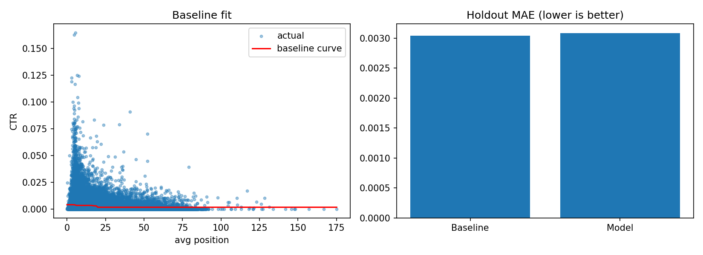

Abstract.
Pages that rank well don't always get clicked at the rate their position predicts, which leaves organic clicks on the table without any ranking change needed.
We build a position-adjusted expected-CTR model on 199,693 published pages from the FlyRank search warehouse, validated against an isotonic position-only baseline on a page-level holdout split to avoid leakage.
The model improved variance explained over the baseline (holdout R² 0.057 vs. 0.034) but did not improve average error (MAE 0.00309 vs. 0.00304) — a genuinely mixed result, reported as such rather than oversold.
We use the model's expected-CTR estimates to rank qualifying pages by estimated lost clicks and assign each a reason code and recommended action.
The output is a prioritized action list a content or SEO team can work top-down.
1Introduction
Search teams often audit content by raw click-through rate, which conflates "bad snippet" with "bad position" — a result sitting at #9 and one sitting at #1 have structurally different CTR ceilings, so raw CTR alone misdirects effort.
This work supports one concrete decision: which pages should a content or SEO team review first, and what kind of review — metadata, content, or none?
2Data
Source: FlyRank ML Internship dataset, FlyRank/internship-warehouse on Hugging Face (gated release, read-token access).
Tables: dim_content (filtered to published, non-deleted content), fact_content_daily_performance (18 monthly partitions, Jan 2025 – Jun 2026), fact_content_query_90d (query breadth only).
Aggregation level: page (content_hash_id), not row or impression — no raw query-level exports retained downstream.
Exclusions: pages with fewer than 50 total impressions (noise-level) were dropped, leaving 199,693 qualifying pages. All identifiers in the source data are pre-hashed.
Public-safe note: no client names, domains, raw URLs, or credentials appear anywhere in this paper or its linked repository.
3Methodology
Label. Page-level CTR = clicks / impressions, aggregated over the observed window.
Baseline. Isotonic regression of CTR on rounded average position (impression-weighted, clipped to positions 1–20), fit only on the training split.
Model. Gradient-boosted regressor (depth 3, 200 trees, learning rate 0.05) using average position and query breadth (distinct queries per page) as features.
Validation design. Grouped split by page (not by row), 70/30 — 139,785 train pages, 59,908 holdout pages — so no page's own performance leaks into the curve or model that scores it.
Leakage checks. Baseline curve and model are both fit exclusively on training pages; every metric reported below is holdout-only.
4Results

Left: baseline expected-CTR curve fit against holdout pages. Right: holdout MAE, baseline vs. model.
Metric
Baseline (position-only)
Model (GBR)
MAE (holdout)
0.00304
0.00309
R² (holdout)
0.034
0.057
The result is genuinely mixed, and we report it as such. Adding query breadth as a feature nearly doubled R² (0.034 → 0.057) but did not reduce average absolute error — on a typical page the model is not more accurate than reading off the position curve alone. It is retained here because it feeds the ranking below, not because it clearly beats the baseline on every metric.
5Limitations & Honest Framing
This is a snapshot analysis over a single aggregation window, not a causal or time-series claim — findings are observed, not directional, unless a time-aware version is added later.
CTR opportunity scores are decision-support, not proof of a fixable issue — a low score can also reflect SERP features, intent mismatch, or brand recognition rather than metadata quality.
No claim is made about Google's ranking algorithm or about causal refresh impact.
Sample after the impression-floor filter: 199,693 pages (139,785 train / 59,908 holdout). Holdout R² of 0.057 means most CTR variance is not explained by position and query breadth alone — treat page-level expected-CTR values as a rough prior, not a precise target.
Because the model shows a mixed result vs. the baseline (better R², slightly worse MAE), the ranked list below should be read as directional prioritization, not a precise prediction of recoverable clicks.
6Ranked Recommendations
Page
Avg. pos
Impressions
CTR
Expected CTR
Est. lost clicks
Reason
content_8c6d8360…
7.71
99,290
0.045%
2.10%
2,039
CTR lagging
content_b64fb5a4…
5.21
758,188
0.151%
0.36%
1,594
CTR lagging
content_39e19a3e…
9.72
425,137
0.003%
0.36%
1,508
CTR lagging
content_e241d641…
4.10
1,829,204
0.312%
0.38%
1,257
Metadata issue
content_d0acf706…
2.22
312,069
0.049%
0.39%
1,062
Metadata issue
content_93aadc6e…
4.48
498,907
0.157%
0.37%
1,054
Metadata issue
content_80eb6221…
2.81
546,198
0.303%
0.50%
1,054
Metadata issue
content_300fd9ae…
5.62
362,425
0.056%
0.31%
909
CTR lagging
content_dcddbd42…
5.24
109,617
0.160%
0.94%
858
CTR lagging
Full ranked list of all 59,908 holdout pages is in work/ranked_opportunities_holdout.csv in the repo.
General playbook, by reason code
High visibility, under-clicked — rewrite title/meta description first; cheapest fix, fastest to test.
Top-10, CTR lagging — content/snippet review; check the page still matches query intent.